小琳分享
首页
视频教程
联系我们
PS对象选择工具教程，给枕头贴图加图案2，Photoshop教程
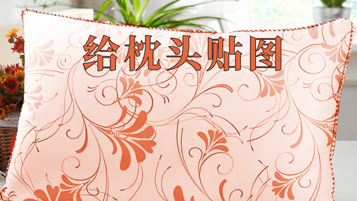
PS对象选择工具教程，给枕头贴图加图案，Photoshop教程
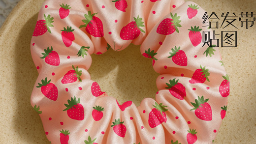
PS快速选择工具教程，给发带贴图加图案，Photoshop教程
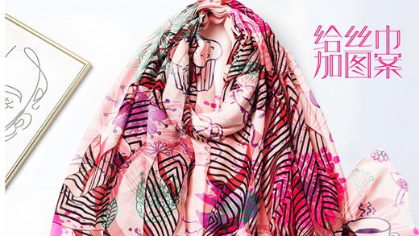
PS快速选择工具教程，给丝巾加图案，Photoshop教程
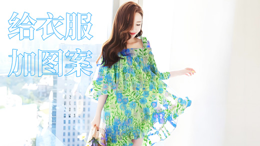
PS快速选择工具教程，给衣服加图案，给人物换衣服，Photoshop教程
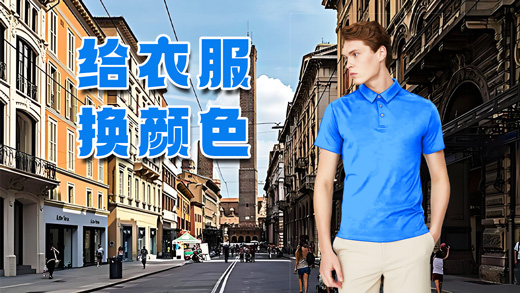
PS快速选择工具教程，给人物换衣服颜色2，Photoshop教程
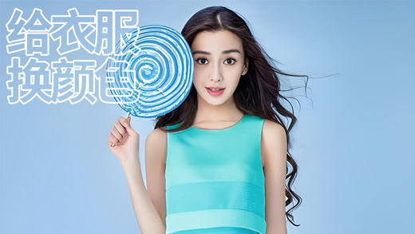
PS快速选择工具教程，给人物换衣服颜色1，Photoshop教程
PS选择并遮住抠图效果1，抠手套，Photoshop教程，抠图换背景
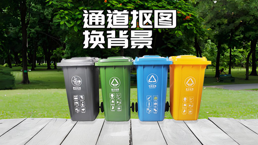
PS通道抠图效果7，抠垃圾桶，Photoshop 通道教程，抠图换背景
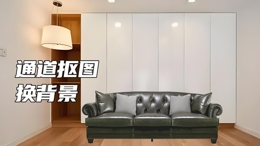
PS通道抠图效果6，抠沙发，Photoshop 通道教程，抠图换背景
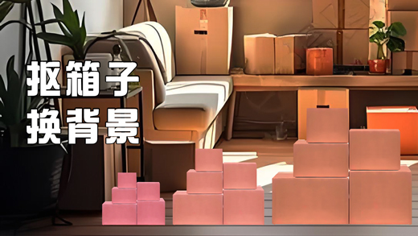
PS钢笔工具抠图效果2，抠箱子，Photoshop 教程，抠图换背景
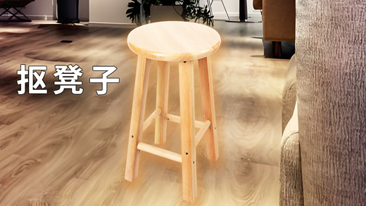
PS通道抠图效果5，抠凳子，Photoshop 通道教程，抠图换背景
PS钢笔工具抠图效果1，抠塑料袋，Photoshop 教程
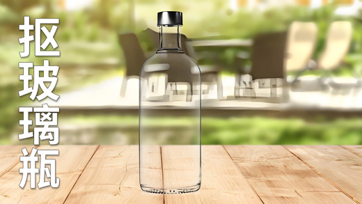
PS通道抠图效果4，抠玻璃瓶，Photoshop 通道教程
PS通道抠图效果3，Photoshop 通道教程，抠图换背景
PS通道抠图效果2，Photoshop 通道教程，抠图换背景
PS通道抠图效果1，Photoshop 通道教程，抠图换背景
PS抠头发效果4，Photoshop 人物抠图效果怎么做？
PS抠头发效果3，Photoshop 人物抠图效果怎么做？
PS抠头发效果2，Photoshop 人物抠图效果怎么做？
PS抠头发效果，Photoshop 人物抠图效果怎么做？
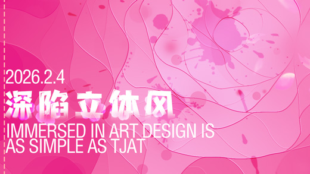
PS深陷立体风效果，Photoshop 深陷立体风效果怎么做
PS水雾玻璃效果，Photoshop 水雾玻璃效果怎么做？
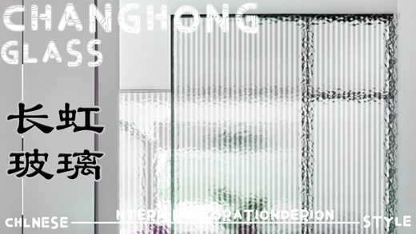
PS长虹玻璃效果，Photoshop 长虹玻璃效果怎么做？
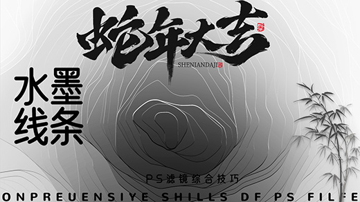
PS水墨线条效果，photoshop 线条效果 PS教程
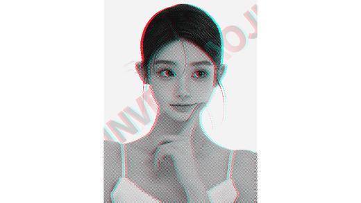
PS颗粒版画效果，photoshop 人物颗粒质感怎么做？
PS人物调色渐变效果教程，PS双色调模式图片怎么调，photoshop 双色调风格